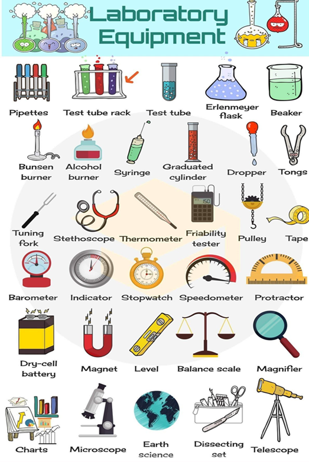

Capítulo 5: Alimentary, Petroliferou and Chemistry – Alimentício, Petrolífero e Química
Nessa unidade vamos explorar diversos vocabulários ligados as três setores econômicos: alimentício, químico e petrolífero. Vamos aos nossos dicionários ilustrados.
A indústria alimentícia mais rentável é a das cadeias de Fast Food (comida rápida), vamos ver os principais alimentos chamados de JUNK FOOD.
Como a culinária e a alimentação americana é dominada pelas redes de fast food e a praticidade na hora de se alimentar.
Quais são as redes de fast food mais conhecidas nos EUA?
Os pioneiros da “comida rápida” foram Richard e Maurice McDonald ao desenvolver um método revolucionário de linha de produção que permitia atender aos clientes em apenas 30 segundos – e assim surgia a mais famosa rede de fast food do mundo até hoje. Tudo era pensado minuciosamente, desde o layout da cozinha ao número de picles no lanche.
Para saber mais
Dica de filme: No documentário “Super Size Me: A Dieta do palhaço” (Super Size Me, 2004), o cineasta americano Morgan Spurlock decide se alimentar apenas de produtos do McDonald’s por 30 dias, consumindo três refeições diárias na rede de fast food. Ele documentou todos os efeitos físicos e psicológicos da experiência no filme, intercalando com outros dados e histórias reais sobre o consumo de fast food e obesidade.
Agora vamos misturar! Comida e química. Todo o alimento passa por um processo, seja químico ou de produção. Observe a química do sorvete. Aprende novas palavras.
A química se utiliza de vários instrumentos, vamos conhecer alguns itens que são utilizados em laboratórios.

Biblioteca – dicionário

Este dicionário da Collins contém palavras chaves e expressões de Oil and Gas Industry. Sobre a indústria de óleo e gás, ou seja, petrolífera. E vem com cd para instalar em computador e ter mais acesso a informação deste vocabulário.
Reconstruindo conhecimentos – Superlativos
Se quisermos destacar que algo ou alguém é superior a todos, como por exemplo: “João é o mais legal de todos”? Aí temos de usar os superlativos

Na frase acima, já dá para notar algo muito importante a respeito dos superlativos: eles normalmente vêm depois do artigo definido the. (Mais adiante veremos duas exceções à esta regra).
Vejamos algumas regrinhas para formar os superlativos em inglês:
Se o adjetivo for curto (uma ou duas sílabas), acrescente EST:
old – oldest
young – youngest
tall – tallest
Se o adjetivo terminar com CVC (consoante – vogal – consoante), dobre a última letra:
big – biggest
hot – hottest
Se terminar com Y, o substitua por I e acrescente EST:
happy – happiest
pretty – prettiest
Se o adjetivo for mais comprido, apenas acrescente a palavra most:
beautiful – most beautiful
important – most important
Para finalizar, estes superlativos são irregulares (exceções):
good – best
bad – worst
far – furthest
little – least
Aplicando o superlativo no nosso vocabulário
The fast food is the most importante industry of the United States. > o fast food é a indústria mais importante para os Estados Unidos.
The ice-cream is more delicious desserts of the world. > O sorvete é a sobremesa mais gostosa do mundo.
John is the oldest. > John é o mais velho.
O que aprendi
• Nesta unidade aprendemos o vocabulário do setor alimentício e químico;
• Recebemos dicas de dicionários sobre o setor petrolífero;
• Vimos que a química está no processo alimentício;
• Aprendemos sobre a cultura do fast food;
• Temos dicas de filmes sobre a alimentação dessas junk food;
• Na parte gramatical vimos o uso dos superlativos.
Praticando
What do you prefer? O que você prefere? Faça uma lista em inglês de alimentos fast food que você mais gosta.
_________________________
_________________________
_________________________
_________________________
Há duas informações nesse texto. Quais são elas?
_________________________
_________________________